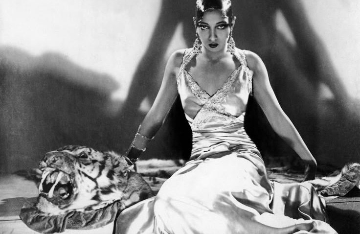
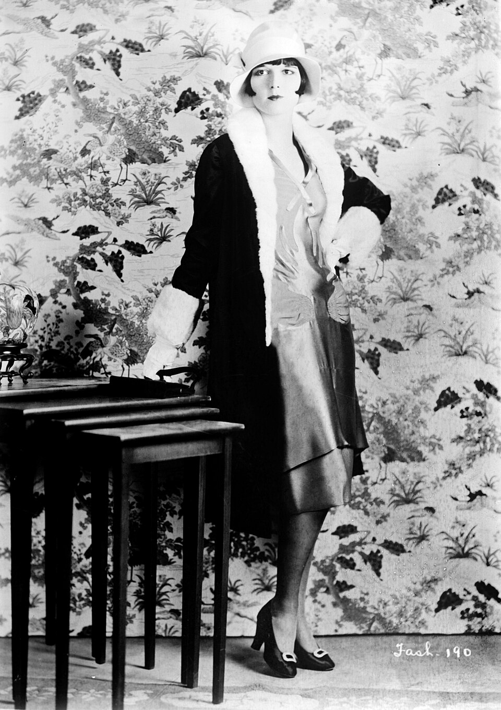
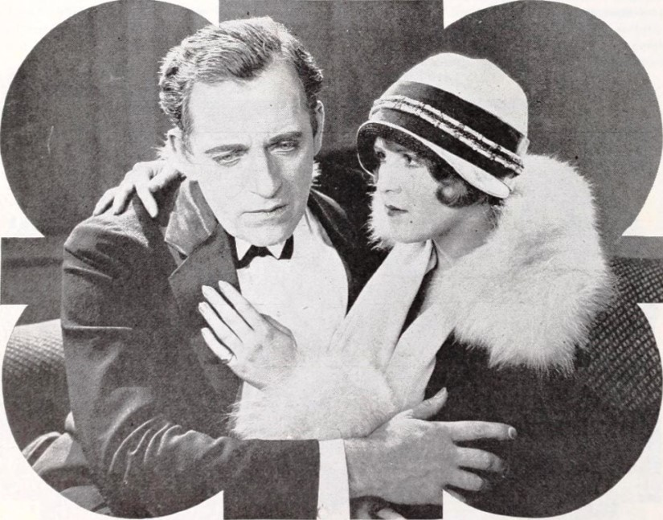
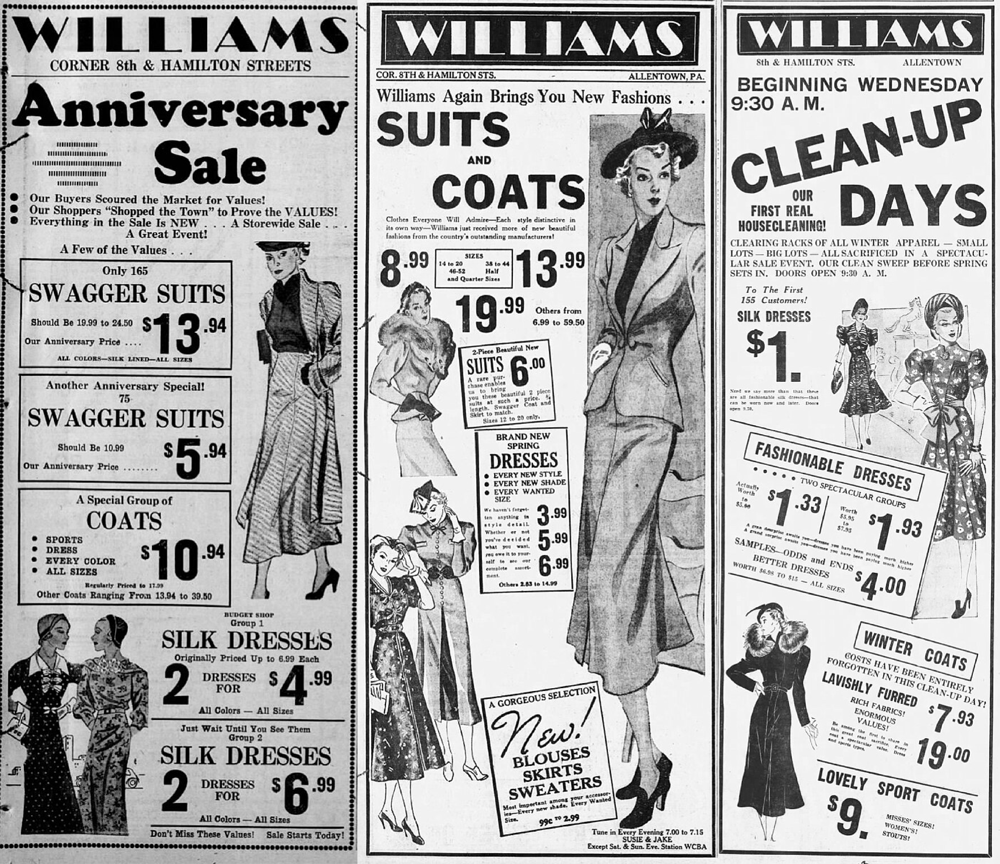
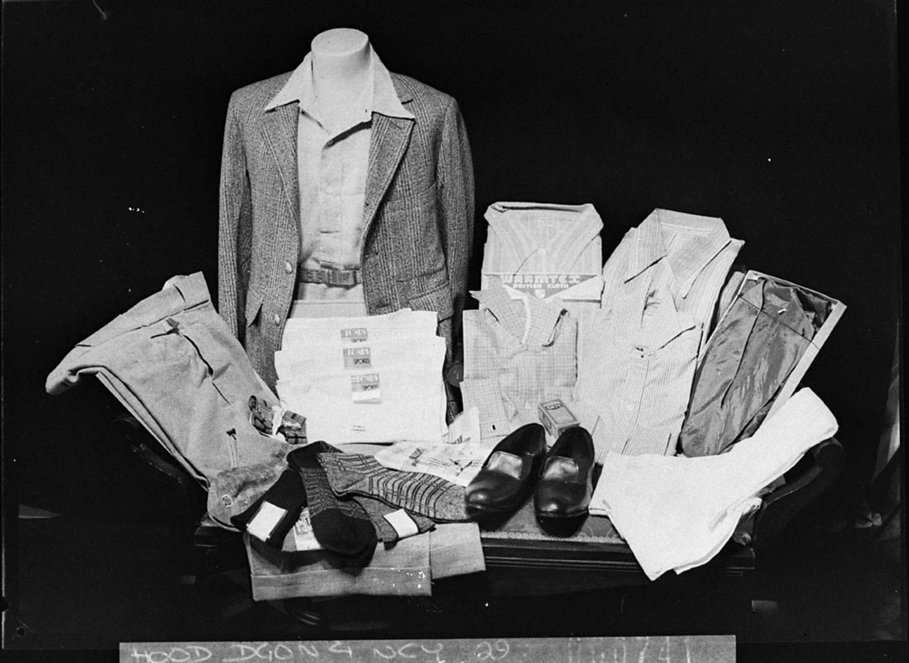
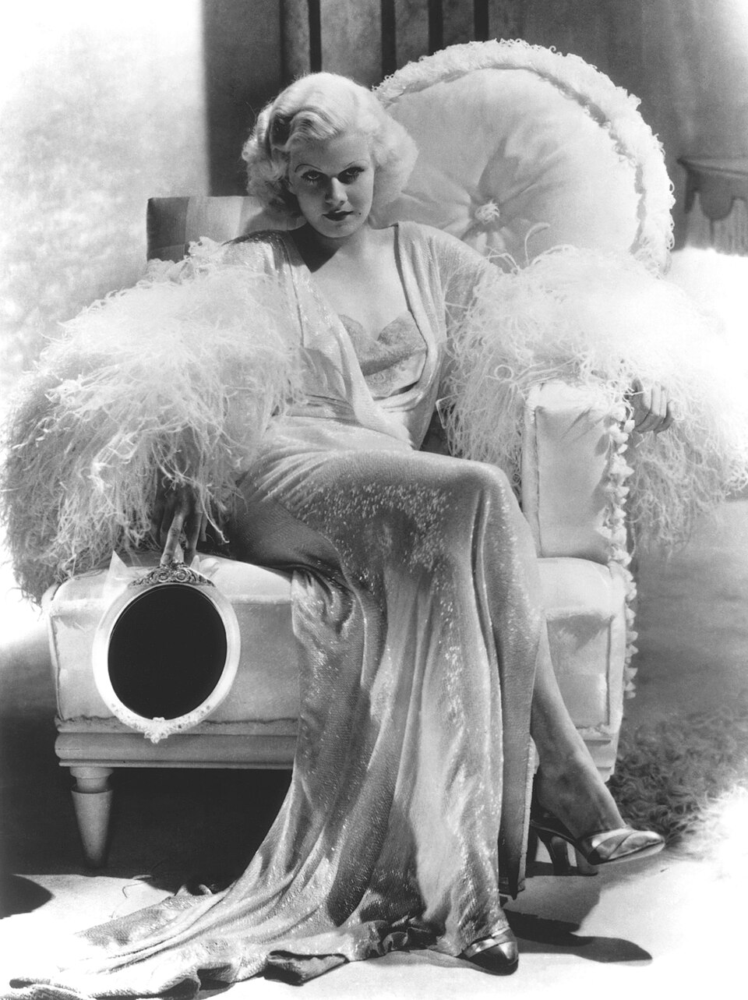

1920s–1930s
Flapper Modernity
Hollywood Glamour

Women's Leisure & Travel Wear (1922-1929)

Women's one-piece bathing suit with skirt, 1922.
New York Public Library.
New York Public Library.

Women's travel clothing and accessories, 1929.
New York Public Library.
New York Public Library.
Louise Brooks: Flapper Style (1920s)

"Louise Brooks." Library of Congress.
Bain News Service Collection.
Flapper Culture & Media (1924)

Chadwick Pictures. The Painted Flapper, 1924.
Fashion Advertisement: Daywear (1934-1938)

The Morning Call. "Williams Fashion Shop," 1934-1938.
Men's Suit Ensemble (1938)

Hood Sam. "A Layout of Hollywood's Glamour."
State Library of New South Wales.
Hollywood Glamour (1935)

Time Magazine. “Jean Harlow,” 1935. Photographed by Harvey White.